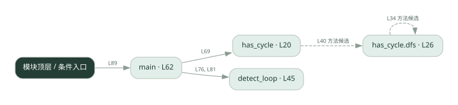

2-14 · 全课程第 34 节
死锁与重复循环检测
032.py
源码快照 40d8b4f57196 · 静态解析 · 2026-09-10
01 / 要完成的事
在等待关系中找环，并检测状态重复或步数过多。
02 / 为什么要做
Agent 可能互相等待，也可能一直重复同样的动作而不结束。
03 / 当前代码状态
DFS 缺少遇到灰色节点时报告环的分支；detect_loop 的重复状态和步数检查未实现。当前代码会漏报示例中的异常。
检测到 None 赋值或 pass 的位置：33, 53, 58。这些也可能是正常初始化，需结合下方函数职责与源码判断；不能仅凭没有下划线认定完成。
主要展示本地计算、内存状态或模拟流程；是否写文件/启动子进程请看调用表。 本次只做静态解析，没有运行练习，也没有替你填写或修改原代码。
04 / 调用图
打开大图 ↗实线：源码中的直接调用；虚线：函数引用/注册、动态调用或按方法名推断的候选。L 是调用所在源码行号。箭头不表示执行顺序或每次必经；分支、循环、异步调度及框架内部调用需结合源码。灰色是外部/未解析目标，橙色是动态分发；省略 print、len 和常规容器操作以减少干扰。孤立函数可能尚未接入。

先从 main 及模块入口 出发，沿箭头找到本文件函数，再查看外部调用或动态分发。右侧调用清单保留所有静态调用点，能回到原文件逐行对照。
05 / 函数定位
| 函数 / 定义行 | 职责（源码注释） | 内部调用 |
|---|---|---|
has_cycleL20 | waits_for = {agent: [它正在等待的 agent...]} | color.get, dfs |
has_cycle.dfsL26 | 以源码函数体为准；下列调用展示其依赖。 | waits_for.get, color.get, dfs |
detect_loopL45 | states = agent 依次产生的状态列表。返回 (是否循环, 原因)。 | set, seen.add |
mainL62 | 以源码函数体为准；下列调用展示其依赖。 | print, has_cycle, detect_loop, range |
这样做的优点
把“卡住”变成可检测条件，便于终止和诊断。
代价与局限
重复状态不总是错误；图检测成立依赖等待关系建模是否准确。
适用场景
工作流调试、给迭代过程增加停止条件。
不宜直接照搬
把检测到等待图环直接等同所有运行时死锁而不检查锁语义。
动手检验理解
构造 A 等 B、B 等 A，再构造正常链条，比较检测结果。
有未实现位置时先预测，再补齐验证。能启动不等于逻辑正确。
查看全部 22 个静态调用 / 引用点
| 调用方 | 目标 | 源码行 | 类型 |
|---|---|---|---|
| has_cycle.dfs | waits_for.get | 28 | 调用 |
| has_cycle.dfs | color.get | 29 | 调用 |
| has_cycle.dfs | dfs | 34 | 调用 |
| has_cycle | color.get | 40 | 调用 |
| has_cycle | dfs | 40 | 调用 |
| detect_loop | set | 48 | 调用 |
| detect_loop | seen.add | 54 | 调用 |
| main | print | 63 | 调用 |
| main | has_cycle | 69 | 调用 |
| main | print | 70 | 调用 |
| main | print | 72 | 调用 |
| main | print | 74 | 调用 |
| main | detect_loop | 76 | 调用 |
| main | print | 77 | 调用 |
| main | print | 79 | 调用 |
| main | range | 80 | 调用 |
| main | detect_loop | 81 | 调用 |
| main | print | 82 | 调用 |
| <模块入口> | print | 86 | 调用 |
| <模块入口> | print | 87 | 调用 |
| <模块入口> | print | 88 | 调用 |
| <模块入口> | main | 89 | 调用 |